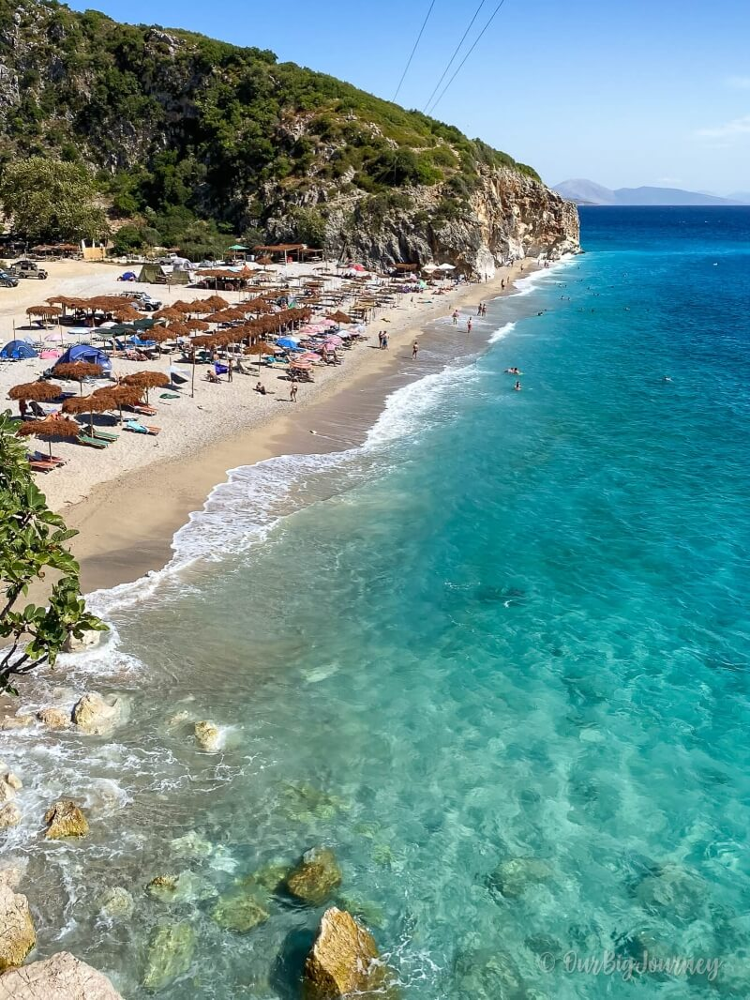
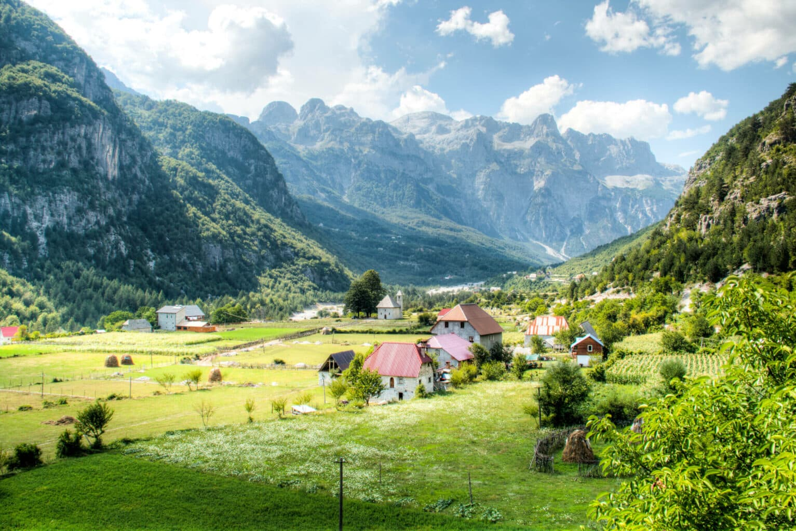
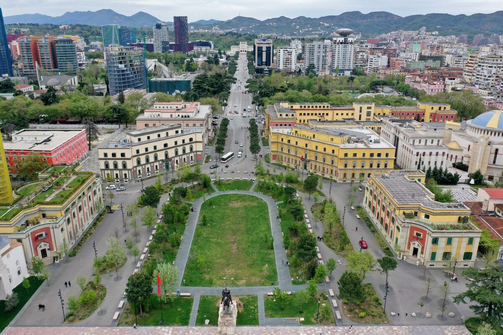
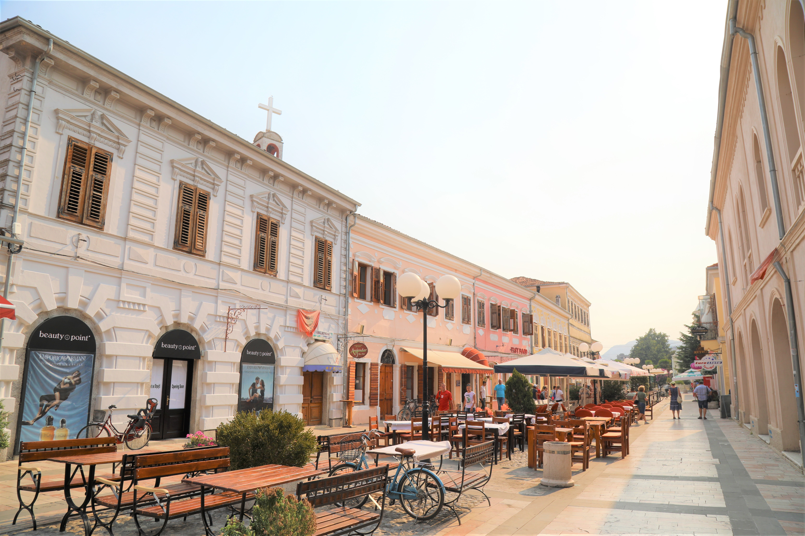
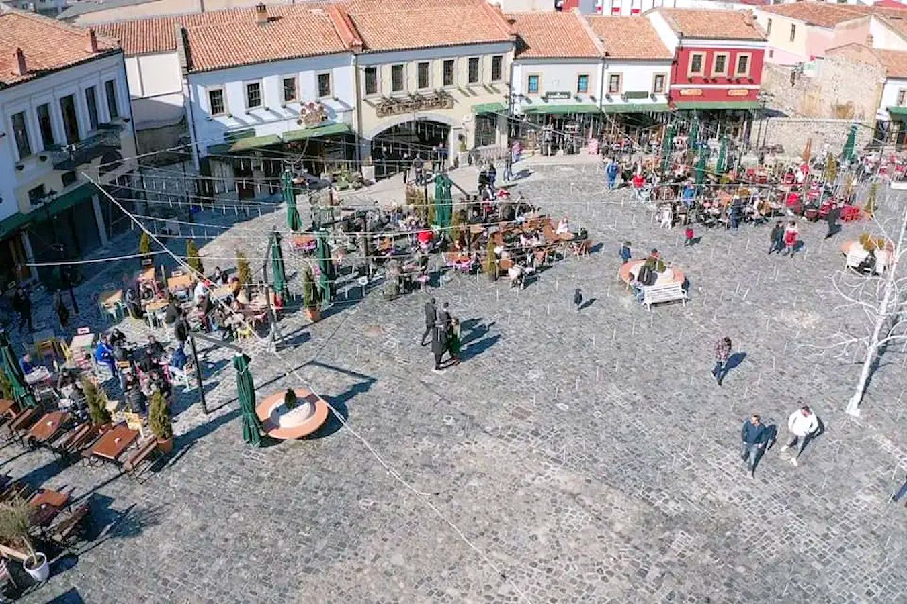
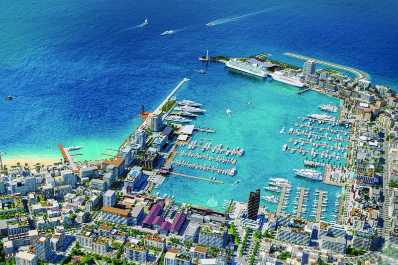
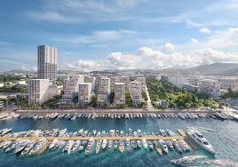

General Summary
Tourism in Albania is rapidly on the rise, as the country, long considered one of Europe's last hidden gems, has opened up politically and economically. After decades of isolation under communist rule, Albania has been transforming into a hub for international tourists. With improved infrastructure and global attention, the country is more accessible than ever before. Social media platforms like Instagram and TikTok have played a huge role in introducing Albania's natural beauty, culture, and history to a global audience. Journalists and travel bloggers have also contributed by showcasing Albania as a must-visit destination for its affordable yet luxurious experiences. Stunning imagery of Albania’s beaches, mountains, and historical landmarks is now captivating tourists worldwide, placing Albania firmly on the tourism map.
Tourism in Albania
Albania offers a wide variety of tourism experiences, catering to both adventure seekers and those looking to relax by the sea. The country’s coastline stretches along the Adriatic and Ionian seas, where beaches like Dhermi, Ksamil, and Saranda are known for their crystal-clear waters and white sands. These beach destinations have gained international fame, particularly on social media platforms, where images of their pristine shores attract travelers from across the globe. However, Albania also offers something unique for those who wish to escape the traditional beach vacation: the Albanian Alps. Located in the northern region, the Alps provide a stark contrast to the beaches, offering mountainous terrains for hiking, camping, and exploration. Theth and Valbona are two prominent destinations in the Alps, where visitors can enjoy untouched landscapes, fresh air, and traditional mountain hospitality. Together, these two vastly different types of tourism highlight Albania's diverse offerings.


Modern History
Albania’s modern history is defined by its years of isolation during the communist regime of Enver Hoxha, which lasted from 1946 until 1992. During this time, Albania was cut off from much of the world, resulting in a significant lag in development compared to other European countries. While this isolation left Albania underdeveloped in terms of infrastructure, it also played a role in preserving the country's culture, traditions, and natural environment. As the rest of Europe modernized rapidly, Albania retained its historical charm, which today attracts visitors looking for authentic experiences. The country is now undergoing rapid change, with efforts focused on economic growth and modernization. Since opening its doors to the world in the early 1990s, Albania has gradually emerged as a vibrant and welcoming destination for tourists. Its people are eager to showcase their rich heritage, stunning landscapes, and hospitality to visitors from across the globe.
Cities to Visit
Tirana
Tirana, the bustling capital of Albania, is a city full of contrasts. It has evolved dramatically over the past few decades, transforming from a quiet, post-communist city into a vibrant urban center. With high-rise buildings, trendy cafes, and a burgeoning art scene, Tirana is a city that blends modernity with rich historical elements. Visitors can explore landmarks like Skanderbeg Square, the National History Museum, and the colorful murals that have been painted across the city. Tirana is also known for its dynamic nightlife, with bars, restaurants, and clubs offering entertainment for all tastes. Despite its modernization, the city retains a sense of history, with Ottoman-era architecture and communist-era relics still visible around the city. Tirana is a perfect base for exploring the rest of Albania, offering all the amenities of a modern capital while keeping its unique character intact.

Shkodër
Shkodër, one of Albania's oldest cities, is located in the northwestern part of the country. Known as the cultural capital of Albania, Shkodër is famous for its Italian-designed architecture, vibrant pedestrian streets, and picturesque views of Lake Shkodër. The city was largely shaped by the renowned Albanian architect Kole Idromeno, whose designs give Shkodër a distinctly European feel. The bustling streets are filled with cyclists and pedestrians, adding to the city’s charm and small-town feel. Despite its modern amenities, Shkodër feels like a city frozen in time, making it a unique destination for visitors. The city is also the gateway to the Albanian Alps, making it an ideal starting point for exploring Theth and Valbona. Whether you're interested in cultural heritage or natural beauty, Shkodër offers the best of both worlds.

Korçë
Nicknamed "Little Paris," Korçë is located in southeastern Albania and is often referred to as the cultural heart of the country. The city is renowned for its artistic and intellectual contributions, particularly in the fields of education and literature. Korçë was the site of Albania’s first school, which opened in 1887, marking it as a symbol of the country's cultural and educational advancements. The city is also famous for its traditional serenades, a form of romantic music that originated here. Strolling through the streets of Korçë, visitors can admire its well-preserved Ottoman-era buildings and enjoy a more relaxed, cultural experience. Korçë offers a mix of historic charm and modern culture, making it a must-visit for those interested in Albania’s rich heritage.

The Future
Albania is looking to the future with several ambitious projects aimed at boosting its tourism infrastructure and overall development. The construction of the new Vlora Airport, expected to open soon, will allow for easier access to the southern regions of Albania, especially the coastal towns that have become popular tourist destinations. This new airport will significantly boost Albania’s connectivity with Europe and beyond. Additionally, the government is revitalizing the national railway system, which has long been neglected, to improve travel options for both locals and tourists. Among the most exciting projects are the new marinas being built in Durres and Vlora. The Durres Marina project is set to transform the city into a major Mediterranean hub, attracting yachts and high-end tourism. The Vlora Marina project also aims to boost luxury tourism, positioning Albania as a key destination for maritime tourism in the region.

